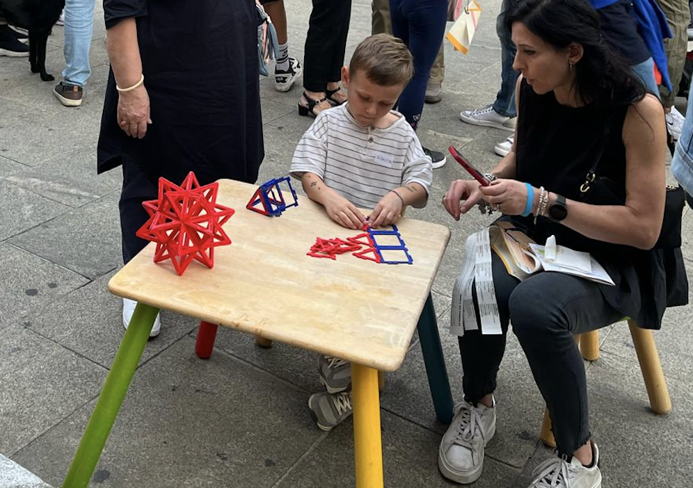
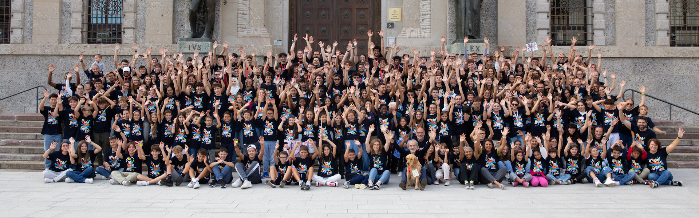
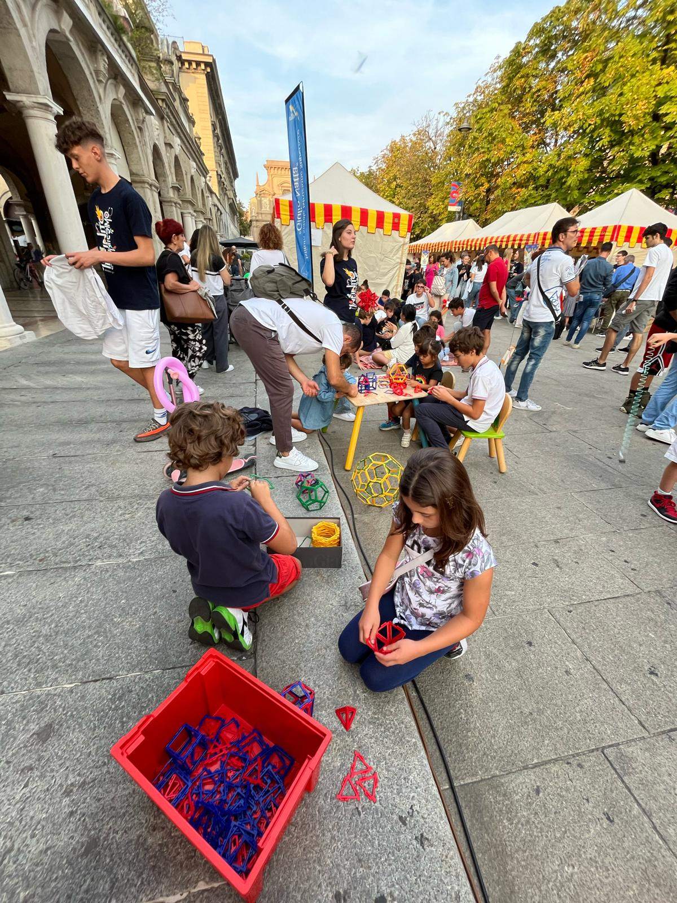
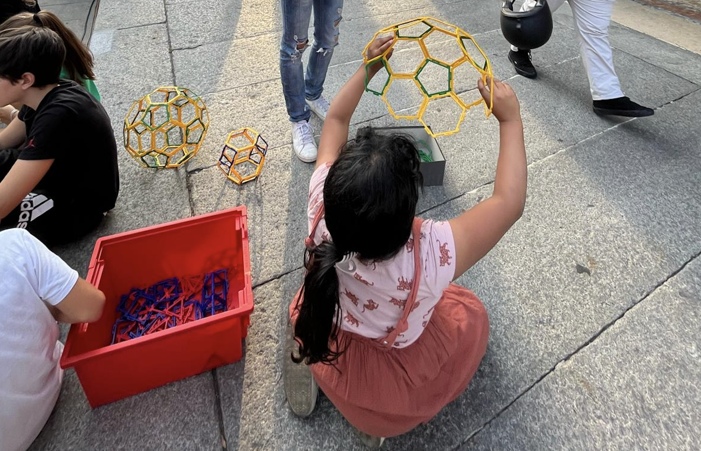
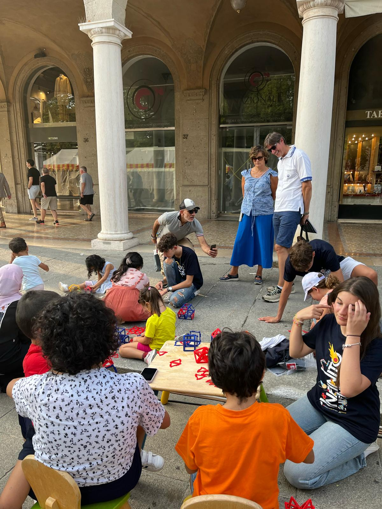
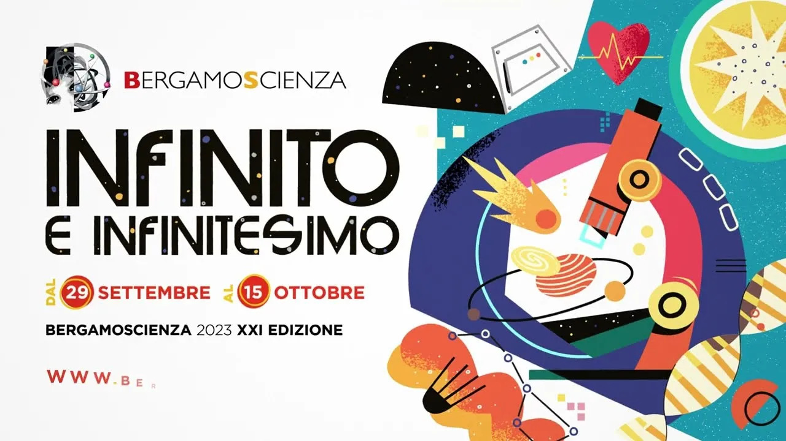

Studente
Lorenzo Marcassoli
Iniziativa & Ente
Scienza in Piazza / Bergamo Scienza
Periodo
Primi mesi A.S. 2023/24


Un progetto per trasformare la complessità scientifica e matematica in laboratori interattivi, accessibili e stimolanti.


Sessioni iniziali dedicate all'analisi e alla comprensione profonda dei temi scientifici da trasmettere al pubblico.
Acquisizione di abilità operative e accorgimenti didattici per la gestione e l'esecuzione corretta dei laboratori sul campo.
Applicazione reale dei progetti sia all'interno del liceo "Amaldi", sia all'aperto tra le piazze e le vie di Bergamo per coinvolgere la cittadinanza.
"Mostrare la teoria per sbloccare la pratica. Abbiamo guidato i partecipanti lasciando sempre spazio alla loro creatività manuale."

Contatto diretto: Interfacciarsi con bambini di diverse fasce d'età ha richiesto una rimodulazione completa del linguaggio.
La lezione: Spiegare l'infinitamente complesso in modo semplice è stata una vera e propria sfida comunicativa, individual e di squadra.
Lavoro di squadra puro tra studenti dello stesso istituto. Sinergia interna focalizzata sulla riuscita dei laboratori.
Il professore referente come guida costante, integrato dal supporto e dai consigli strategici di Marco Testa (Bergamo Scienza).
"Un'esperienza che mi ha offerto un grande insegnamento sociale, insegnandomi a collaborare in modo nuovo e a interfacciarmi con il pubblico dei più piccoli."